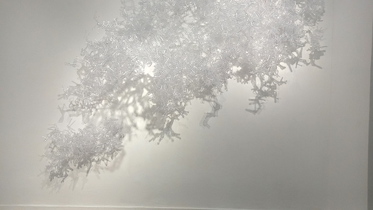
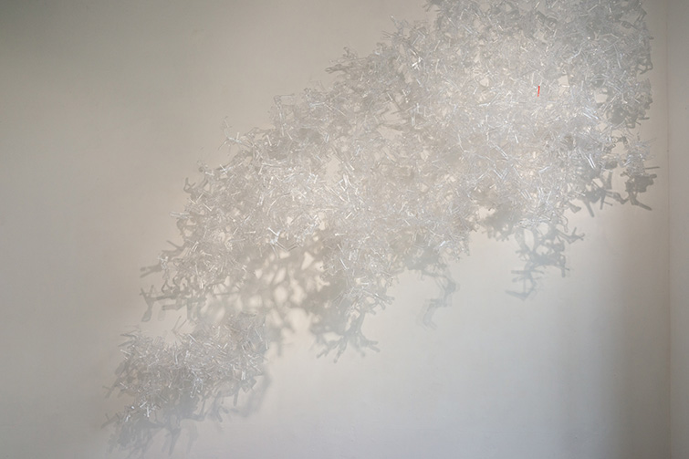
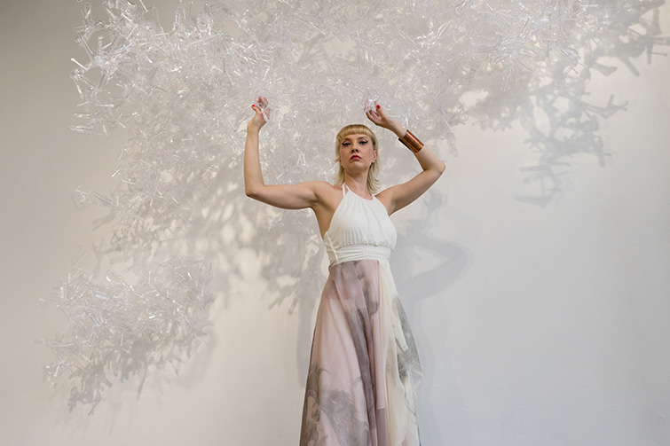
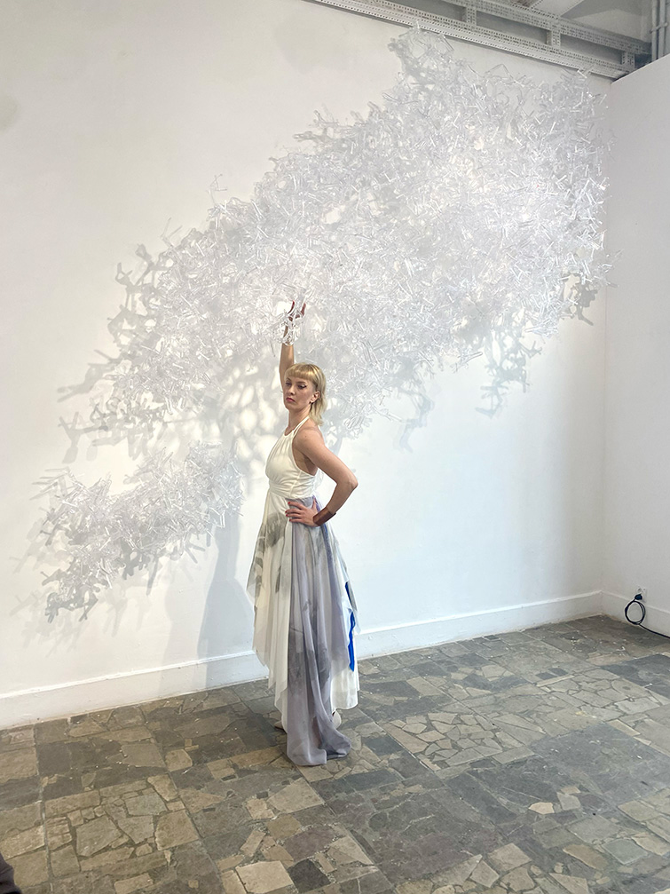
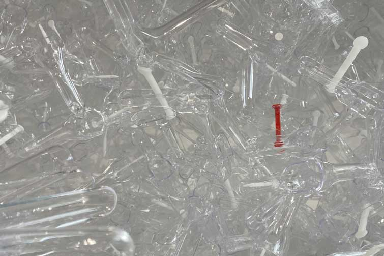

NIEWIDOCZNE





Instalacja NIEWIDOCZNE byla prezentowana na wystawie indywidualnej pt.:"PUSH&PULL" w Galerii XX1 w Warszawie w 2024r.
Porusza temat niewidocznosci i wielosci kobiet, ktore ulegaja przemocy psychicznej.
Instalacja skladala sie z 1400 plastikowych wziernikow dopochwowych, jest to instalacja site specific i moze byc dopasowana forma i iloscia elementow do przestrzeni.
wiecej na: https://www.galeriaxx1.pl/izabela-chamczyk-push-pull/